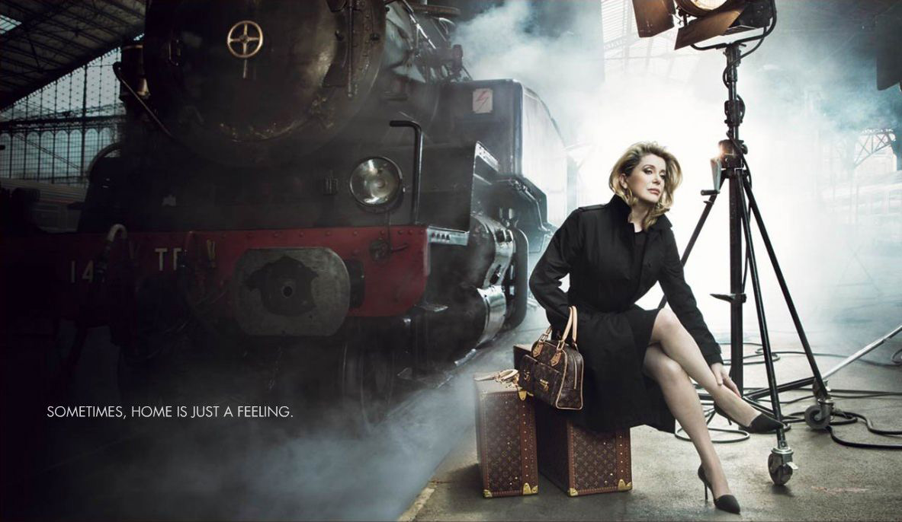

Ladridos

Autor: Annie Leibovitz
Año de publicación: 2014
Comentrio del autor:
Durante un tiempo, me soprendí dedicando ratos
más largos de lo normal a observar las fotos que ilustraban los anuncios de Louis Vuitton en la revista Time.
Hasta que decidi que yo realizara esas fotos.
Critica:
Realmente hace que estos anuncios sean una obra de arte es
la fotógrafa tras la cámara, enhorabuena Annie.